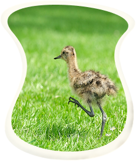
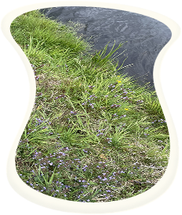
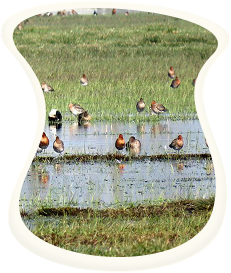

Doneer en draag bij aan natuurherstel
Hoe draag je bij
Door te doneren draag je bij aan natuurherstel. De boeren van Amstel nemen maatregelen voor natuurherstel.
Lees hieronder aan welke natuurmaatregelen je bijdraagt.
Later maaien
Ruimte voor weidevogels: we compenseren de boeren voor de 'offers' die zij brengen, zoals het later maaien van gras zodat de kuikens van de grutto veilig kunnen opgroeien.

Slootranden
Je helpt bij de aanleg van kruiden- en bloemrijke slootranden die essentieel zijn voor insecten en vogels.

Plas-dras
Plas-drasgebieden: Het waterpeil wordt tijdelijk verhoogd, waardoor delen van het land onder water komen te staan. Hierdoor kunnen weidevogels makkelijker voedsel vinden.
